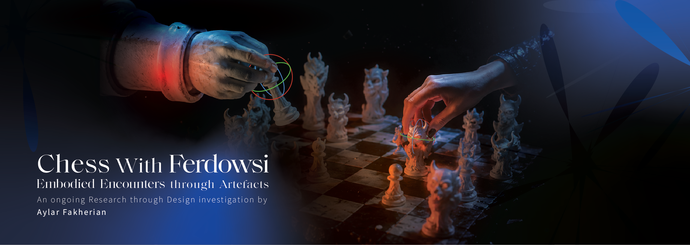
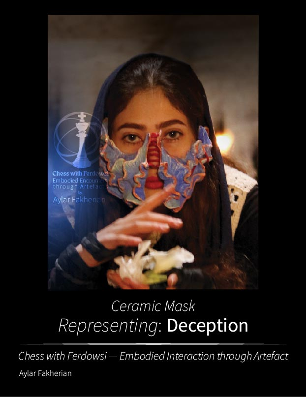

Chess with Ferdowsi — Embodied Interaction through Artefacts
An ongoing Research through Design investigation by Aylar Fakherian.
Chess with Ferdowsi investigates how physical and virtual artefacts shape embodied interaction with cultural narratives through ceramic performance masks and immersive XR.
Research Question
Research Context
The project uses the Shahnameh as design material rather than subject matter. Rather than directly reproducing the mythical creatures described in the text, the project explores how cultural narratives can be translated into artefacts that are experienced through embodied interaction.
The research began with conceptual interpretations of the Divs in the Shahnameh, exploring human conditions and qualities such as greed, love, deception, conflict, and belligerence, alongside the figure of Div-e Sepid.
Research through Design
The first study developed ceramic performance masks as physical research artefacts. Their weight, texture, fragility, and physical resistance introduced new conditions for performers during embodied performance.
The project then raised a further question: What happens when the material disappears?
An immersive XR study is currently being developed to explore how the artefacts operate when physical materiality is replaced by virtual configuration.
Performance Studies
The physical artefacts were developed around different conceptual qualities and cultural interpretations. These performances form part of the physical artefact study, exploring how conceptual qualities can be embodied through the interaction between performer, artefact, and environment.





Selected physical performance studies developed through the ceramic artefact investigation.
Research Focus
Research through Design · Practice-based Research · Embodied Interaction · Human-Centred Design · Intangible Cultural Heritage · Digital Cultural Heritage · XR · Physical–Virtual Artefact Comparison
The Environment as a Variable
The physical study was not limited to a single performance setting. Performances were explored across different environments, including the Qadamgah Historical Site, Tabriz Bazaar, and studio settings.
The environment was treated as part of the wider system surrounding the artefact and performer. This allowed the physical study to consider how embodied interaction may emerge not only from the artefact itself, but also from the conditions in which it is encountered.
From Physical to Virtual
The ceramic study raised a further question: What happens when the material disappears?
If weight, texture, fragility, and physical resistance contribute to the conditions of performance, what happens when those material qualities are removed or transformed?
To explore this question, the artefacts are being recreated digitally and introduced into an immersive XR environment.
The intention is not to change the cultural narrative or character, but to change the configuration of the artefact itself. The physical configuration becomes virtual while the research question remains comparable.
XR Artefact Study — Ongoing
The virtual configuration is currently under development.
The XR study is designed to investigate how the same conceptual artefacts operate when physical materiality is replaced by virtual embodiment.
The development uses Blender, Unity, OpenXR, and XR Interaction Toolkit.
The final comparative evaluation will be added after the XR performance study is completed.
Comparative Framework
The project explores two configurations of the artefact:
| Physical Configuration | Virtual Configuration |
|---|---|
| Ceramic | XR |
| Physical weight | Virtual presence |
| Physical texture | Perceptual representation |
| Fragility | Digital condition |
| Physical resistance | Virtual interaction |
| Embodied interaction | Embodied interaction |
| Cultural interpretation | Cultural interpretation |
The purpose of the comparison is not to determine which medium is better. Instead, the study asks how changing the conditions of an artefact may influence embodied interaction, interpretation, and experience.
Research Approach
The project combines Research through Design (RtD), Practice-based Research, cultural narrative analysis, artefact design, embodied performance, physical prototyping, XR prototyping, and comparative investigation.
The artefacts function as research artefacts through which questions about materiality, embodiment, interpretation, and interaction can be explored.
Research Contribution
This project investigates how artefacts can mediate between cultural narratives and embodied experience.
Rather than treating cultural heritage simply as content to be represented, the research explores how cultural material can become part of a designed encounter in which interpretation emerges through interaction.
The investigation contributes to ongoing research in Research through Design, Practice-based Research, Embodied Interaction, Materiality and Artefact Mediation, Human-Centred Design, Intangible Cultural Heritage, Digital Cultural Heritage, and Physical–Virtual Comparative Research.
Project Status
The physical artefact study has been completed. The virtual artefact study is currently under development. Comparative evaluation of the physical and virtual configurations will be added as the research progresses.
About the Researcher
Aylar Fakherian is a Human-Centred Design researcher working across Research through Design, interactive systems, immersive experiences, and digital cultural heritage.